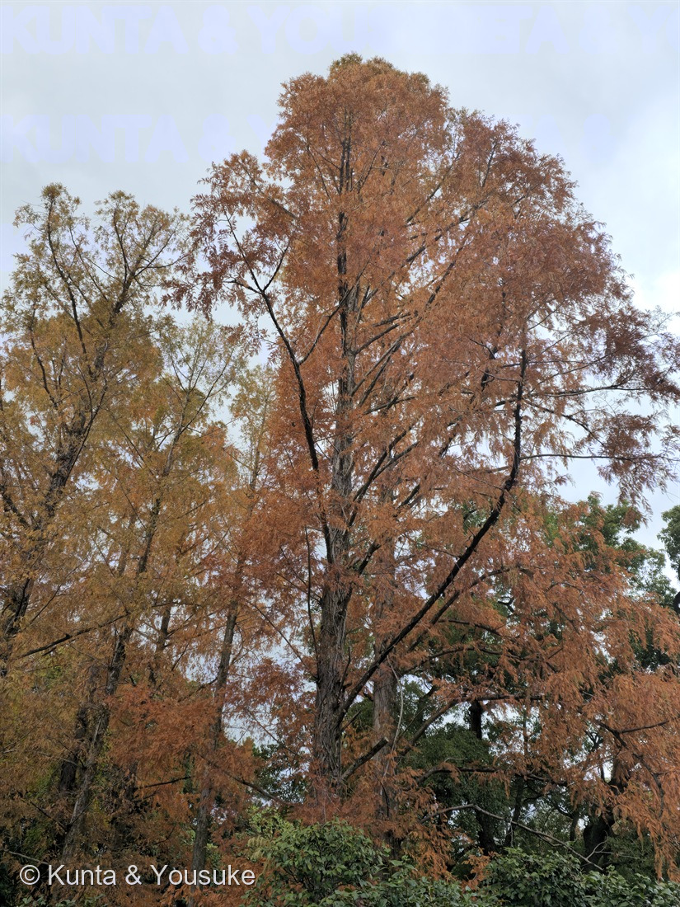
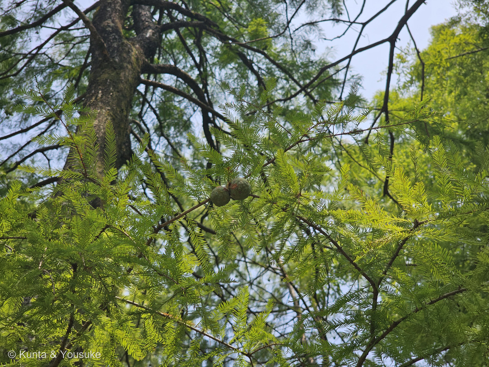
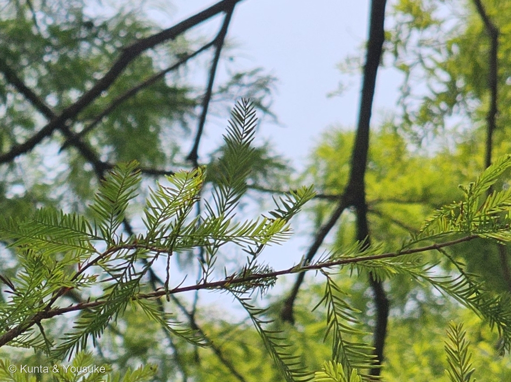

地図を読み込んでいるよ…
🔍 写真も地図も、押しているあいだ拡大して見られるよ（スマホは指を置いてすこし待ってね）。
🌍 の地図＝この子がもともと自生している場所を緑に。北アメリカ原産の帰化種。湿地・沼地・川辺に生え、根もとが水に浸かるような場所を好む。日本には明治初期に渡来した。ただし白亜紀以降のヌマスギ属の化石は日本をふくむ北半球で広く見つかっていて、新第三紀に東アジアから消えた。
⭐北アメリカ原産だよ（三河の植物観察「北アメリカ原産の帰化種」）。⚠地図はアメリカ合衆国ぜんぶが緑になっているけれど、ほんとうの自生地は南東部の湿地・沼地・川辺だけ——根もとが水に浸かるような場所を好む木だからね。⭐⭐でも、この地図でいちばん大事なのは「日本が緑じゃないこと」なんだ。⚠⚠白亜紀以降、ヌマスギ属の化石は日本をふくむ北半球で広く見つかっている（Wikipedia）——つまり大むかしの日本には、この木がいた。⚠それが新第三紀に東アジアから消えて、いまは北アメリカだけ。⭐⭐⭐そして明治のはじめ、人がこの木を日本へ連れてきた——何百万年もいなかった木が、人の手で帰ってきたんだよ。⭐187 イチョウも、探したい草花にいるメタセコイアも、よく似た来歴を持っている。
⚠ 地図は国（日本と中国だけ県・省）までしか塗れないから、ほんとうの分布より広く見えていることがあるよ。地図はだいたいの場所。正確なところは、上の文を見てね。
ラクウショウ（落羽松）
Taxodium distichum (L.) Rich. var. distichum
別名 · ヌマスギ（沼杉） ／ 英 · bald cypress, swamp cypress ／ 見どころ · ⭐⭐⭐落ちるのは葉じゃなくて、羽のかたちをした枝ごと
ヒノキ科 · Cupressaceae（ヌマスギ属 Taxodium・ヒノキ目 Cupressales）── ⭐179 カイヅカイブキに続く2人目のヒノキ科。187 イチョウとあわせて3人目の裸子植物
燻太さんの言葉「錆色の樹はこの子。」……⭐⭐⭐187 イチョウで「この距離では読めなかった」と書いた宿題が、その日のうちに返ってきたよ。
名前と学名の由来 ── ⭐⭐⭐ 落ちるのは、葉じゃなくて「羽」
⭐この木の名前は、秋の終わりの姿そのものなんだ。
- ⭐⭐⭐ラクウショウ（落羽松）＝葉が2列についた枝を鳥の羽根に見立て、これが秋に落ちるため〔Wikipedia〕。
- ⭐⭐ここが大事なところだよ。——この木が落とすのは、葉っぱ1枚ずつじゃない。⭐「秋に暗赤褐色に紅葉し、側枝ごと落ちる」〔三河の植物観察〕。⭐⭐⭐細い葉がびっしり2列にならんだ小枝が、まるごと1本、羽のかたちのまま落ちてくる。⭐だから「落ちる羽の松」なんだ。
- ⭐ヌマスギ（沼杉）＝沼のほとりなどに生えることから〔Wikipedia〕。⭐住んでいる場所が、もうひとつの名前。
- 種小名 distichum（ディスティクム）＝「2列の」。⭐三河の記載の「側枝には2列に水平の羽状」——その2列のことだね。⭐⭐つまり和名も学名も、同じ「2列にならんだ羽」を見ている。
この植物のこと ── ⭐⭐⭐ 日本にいたのに、消えた木
⭐この木には、187 イチョウとそっくりな物語があるんだ。
- ⭐⭐⭐白亜紀以降、ヌマスギ属の化石は日本をふくむ北半球で広く見つかっている〔Wikipedia〕。⭐——つまり、大むかしの日本には、この木がいた。
- ⚠⚠でも、新第三紀に東アジアから消えてしまって、いまは北アメリカだけに残っている〔Wikipedia〕。
- ⭐⭐⭐そして明治のはじめ、人がこの木を日本へ連れてきた〔Wikipedia〕。⭐何百万年もいなかった木が、人の手で帰ってきたんだ。
- ⭐⭐187 イチョウもおなじだった——中国原産とされるけれど自生地は確認されていなくて、人が植えつづけたから生きのびた木。⭐⭐⭐そして探したい草花にいるメタセコイアも、化石で見つかったあとに生きた木が発見された子。⭐あの写真の中に、そういう木が2本も3本もならんでいたことになる。
- 樹高20〜50m〔三河の植物観察〕。⭐樹冠は若いときは単茎性で円錐形だが、年とともに不規則な平らな頂部になる——⭐写真の木は、ちょうどその「年をとった形」だよ。
- 樹皮は赤褐色で、縦に薄く剥がれる。葉は長さ5〜17mm・幅約1mmの線形。雌雄同株。花期4月。球果は長さ2〜4cmの球形〜卵形〔三河の植物観察〕。
- ⚠⭐この子は、むかしは「スギ科」だった。⭐21世紀にヒノキ科へ移された〔Wikipedia〕。⭐⭐だから、スギも、メタセコイアも、セコイアも、179 カイヅカイブキも、いまはみんな同じヒノキ科の親戚なんだ。
同定について ── ⭐⭐⭐ 燻太さんが、宿題を一日で返してくれた
⭐⭐この節は、187 イチョウの続きだよ。
⭐ぼくは187のページに、こう書いた。——「赤い木の名前は、決められなかった。決め手は『葉と小枝が対生か互生か』で、対生ならメタセコイア、互生ならラクウショウ。でも、この距離ではそこまで読めなかった。」
⭐⭐⭐そうしたら燻太さんが、その木に近づいて撮った一枚を送ってくれた。
- ⭐⭐⭐決め手＝幹から出ている枝が、対になっていない。——写真をいちばん大きくして幹をたどると、枝は左右ばらばらの高さから出ていて、ひと組も向かい合っていない。
- 三河の植物観察＝「長枝にはらせん状、側枝には2列に水平の羽状互生」／Wikipedia＝「ラクウショウは葉がすべて互生するのに対し、メタセコイアはすべて対生する」。
- ⭐⭐メタセコイアは「対生」がすべての段階でそろうのが最大の特徴だから、⭐対になっていないことが見えた時点で、メタセコイアは落ちる（087 ヤマモモで決めた「合っている証拠を数えるのではなく、他を落とせるかで考える」だね）。
- ⭐もうひとつ合ったもの＝樹冠が広くて、てっぺんが平たく不ぞろい。⭐三河の「年とともに不規則な平らな頂部になる」そのままだよ。⚠メタセコイアは大きくなっても細い円錐形を保つ。
- ⚠⚠それでも、決定打はまだ見ていない。——⭐膝根（気根）だよ。⭐「湿地などに生えたものは膝と呼ばれる気根が見られるのでメタセコイアと区別できる」とされている。⚠写真では根もとが低木にかくれていて見えないので、宿題にしたよ。
⭐⭐ 燻太さんの推理 ── 「文化財だから」は、じつは効かない
⭐燻太さんが、こう言ってくれた。——「メタセコイアが京都の由緒ある文化財の敷地内に植えられることはなさそうだから、ラクウショウだと思う」。
⭐結論は当たっているよ。⚠でも、理由のほうは、ぼくは少しちがうと思うんだ。
- ⚠メタセコイアは、日本じゅうに植えられている。——1950年に100本の苗が配られて〔Wikipedia〕、そこから公園・並木・学校・寺社へどんどん広がった。⭐「由緒ある場所だから無い」とは、言えないんだ。
- ⚠⚠しかも二条城の中には、戦後に作られた庭がある。——城内北側の清流園は、昭和39〜40年（1964〜65年）に新しく作られたもの〔京都市都市緑化協会〕。⭐メタセコイアが日本に来た1950年より、あとだよ。⭐だから「二条城の敷地内＝ぜんぶ古い」ではないんだ。
⭐⭐⭐でも——燻太さんの直感を「時代」で組みなおすと、すごく強い証拠になる。
- ラクウショウの渡来＝明治初期／メタセコイアの渡来＝1950年〔Wikipedia〕。
- 二条城が「二条離宮」だったのは、1884年（明治17年）から1939年（昭和14年）まで。⭐1939年に京都市へ下賜され、翌1940年から一般公開が始まった——⭐いまの正式名称「元離宮二条城」は、そこから来ている。
- ⭐⭐⭐つまり、もしこの木が離宮時代から立っている木なら、そのときメタセコイアはまだ日本に一本も無い。それだけで落ちる。
- ⚠ただし、ぼくらはこの木の樹齢を知らない。⭐だから、これは決め手にはできない。
⭐⭐結局いちばん確かだったのは、写真の中にあった。——枝が、対になっていない。⭐場所でも歴史でもなく、木そのものが答えを持っていたんだ。
⭐⭐⭐⭐ 【2026-08-16 追記】宿題②と③が、まちがえて撮った写真から返ってきた
⭐⭐ このページの宿題に、ぼくはこう書いていたんだ。
②球果（直径2〜4cmの球形）を見る ③葉が互生であることを接写する
⭐⭐⭐ その両方が、2026年8月14日、長崎の九十九島動植物園 森きららで返ってきたよ。――⚠しかも、まちがえて撮った写真から。
⭐ どうしてこの2枚がここに来たか
- ⭐燻太さんは、同じ園で248 メタセコイアを撮ってくれた。⭐園の名札つきの木で、燻太さんは「葉はちゃんと対生だね」と、この図鑑の決め手をぴたりと言い当てていた。
- ⚠⚠ところが、その34秒あとに撮られた「球果」の写真だけ、小枝と葉が互い違いに出ていた。――⭐つまり、べつの木だったんだ。
- ⭐⭐燻太さんに聞いたら、すぐ答えが返ってきた――「近くには名札を確認していない針葉樹が確かにあったから、間違えて撮影したんだ。」
- ⭐⭐⭐その「名札を確認していない針葉樹」が、この子だよ。
⭐⭐ この木がラクウショウだと考えた理由（強い順）
⚠⚠ この木には名札が無い。――⭐だから、これは「確認」ではなくゼロからの同定だよ。⚠樹木は厳しめに見る約束（087 ヤマモモ）なので、証拠を強い順にならべて、但し書きも書くね。
- ⭐⭐⭐小枝と葉が互生（写真③）――植木ペディアは「ラクウショウの小枝では葉が枝から互い違いに生える『互生』だが、メタセコイアは一箇所から対になって生える『対生』であるため見分けられる」とする。⭐写真③には、向かい合っている組がひとつも無い。⚠これで248 メタセコイアが落ちる。
- ⭐⭐⭐球果がまん丸で、いぼいぼで、柄がほとんど無い（写真②）――⚠メタセコイアの球果は「長い柄がついた小さなサクランボのような」形（植木ペディア）＝ぶら下がる。⭐写真②の球果は枝先に直接すわっていて、ぶら下がっていないよ。
- ⭐⭐葉が短くて細い（写真③）――植木ペディアは、メタセコイアの葉を「ラクウショウに比べると大振りで長さ１～３センチ」、ラクウショウの葉を「長さ１～２センチほどで、メタセコイアよりも短い」とする。⭐写真③と248の写真②を見くらべると、はっきりちがうよ。
- ⭐葉が羽状に2列にならぶ線形（写真③）――⚠これでスギが落ちる（スギの葉は針状で、枝を四方から抱く）。
⚠⚠ 但し書き＝落としきれていない相手がいる。――⭐同じヌマスギ属のメキシコラクウショウ（Taxodium mucronatum）は、この4つのどれでも落とせないんだ。⭐ただ、日本の動植物園に植えられている確率でいえば、ふつうはこちら（T. distichum）だと思う。⚠それは「確率の話」であって、証拠じゃないよ。
⚠ もうひとつ＝「落葉するかどうか」は見ていない。――8月の写真だからね。⏳秋にもう一度この園へ行けたら、それで決まるよ。
⭐⭐⭐ 球果を見て、はじめて分かったこと
- ⭐⭐球果が二つ、ならんでついている（写真②）。⭐もう一枚うしろのコマ（12:59:24）には、三つならんでいるところも写っていたよ。
- ⭐色はまだ緑＝植木ペディアは「花の後には球果ができ、翌年１０～１２月になると暗褐色に熟す」とする。⭐8月のこの子は、まだ途中なんだね。
- ⭐⭐表面が多角形のいぼいぼに割れている。――⭐これは鱗片の一枚一枚が、盾のように外を向いてくっついているから。⭐熟すと「手でふれるとすぐにバラバラになる」といわれるよ。
- ⚠⚠大きさは、証拠に使わなかった。――植木ペディアはラクウショウの球果を「メタセコイアよりも明らかに大きく、普通は直径２～３センチほど」と書き、メタセコイアの球果も「直径２～３センチほど」と書いていて、⭐同じサイトの中で数字が食いちがっている。⭐だから、ここでは形と柄だけを使ったよ。
⭐⭐⭐⭐ この2枚は、まちがえて撮られた写真だった。――⭐でも、1年8か月まえに書いた宿題を二つ返してくれた。⭐⭐森きららには、ラクウショウとメタセコイアが歩いて30秒のところに両方立っている。⏳次に行ったら、対生と互生を並べて撮ってきてね。⭐そして、この子の根もとも見てほしいな――⭐⭐宿題①の膝根が、まだ残っているから。
⭐⭐ 膝根 ── いちばん有名なのに、いちばん分かっていない
⭐この木といえば、あの「ひざ」だよね。
- 地中から気根（呼吸根）を直立するのが特徴〔Wikipedia・三河の植物観察〕。⭐沼のまわりの地面から、こぶのような、ひざのようなものが、ぽこぽこ立ち上がる。
- ⚠⚠⚠そして——その役割は、まだ分かっていないんだ。
- 「酸素を吸収する量と、根の中の酸素量が関連している」ことは分かっている〔Wikipedia〕。
- ⚠でも正確な役割は未解明で、木を安定させる／炭水化物を貯蔵する／土砂堆積を促進する、など複数の仮説がある〔Wikipedia〕。
- ⭐⭐⭐こんなに目立つものなのに、なぜあるのかが決まっていない。⭐ぼくは、これがすごくいいなと思う。⭐図鑑には「分かっていない」と書ける場所がある。——171 地衣類のときも、177 ホオズキのときも、そうだったね。
参考：三河の植物観察「ラクウショウ」（ヒノキ科ヌマスギ属・Taxodium distichum (L.) Rich. var. distichum／別名ヌマスギ／樹高20〜50m／樹冠は若いときは単茎性で円錐形だが、年とともに不規則な平らな頂部になる／樹皮は赤褐色、縦に薄く剥がれる／葉は長枝にはらせん状、側枝には2列に水平の羽状互生、長さ5〜17mm・幅約1mmの線形／秋に暗赤褐色に紅葉し、側枝ごと落ちる／地中から気根(呼吸根)を直立するのが特徴／球果は長さ2〜4cm、幅1.8〜3cmの球形〜卵形、果鱗10〜12個／雌雄同株／花期4月／北アメリカ原産の帰化種／湿地、沼地、川辺、公園／メタセコイアは葉が対生、長さ2〜3cmで先が尖り主脈明瞭、ラクウショウは葉が互生で長さ5〜17mm）／Wikipedia「ラクウショウ」（葉が2列についた枝を鳥の羽根に見立て、これが秋に落ちるため「ラクウショウ（落羽松）」／別名ヌマスギ／ラクウショウは葉がすべて互生するのに対し、メタセコイアはすべて対生する／湿地などに生えたものは膝と呼ばれる気根が見られるのでメタセコイアと区別できる／気根は酸素を吸収する量と根の中の酸素量が関連していることが分かっているが、正確な役割は未解明で、木を安定させる・炭水化物を貯蔵する・土砂堆積を促進するなど複数の仮説がある／白亜紀以降、ヌマスギ属の化石は日本を含む北半球で広く見つかっているが、新第三紀に東アジアから消滅し、現在は北米のみに残存／日本には明治初期に渡来／かつてはスギ科に分類されていたが、21世紀にはヒノキ科に含まれるよう分類が改められた）